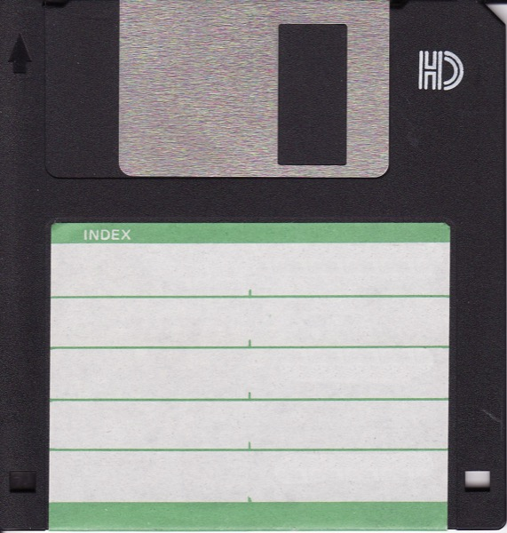

Not Found
The requested URL /neuromancer/disk/ was not found on this server.
Apache/1.3.27 Server at neuromancer Port 80
N E U R O M A N C E R
[ CLICK TO CONNECT ]
000000
you are visitor number ... best viewed at 800x600 the phone will ring once do not tell anyone what the disk said last updated 12/09/1992
